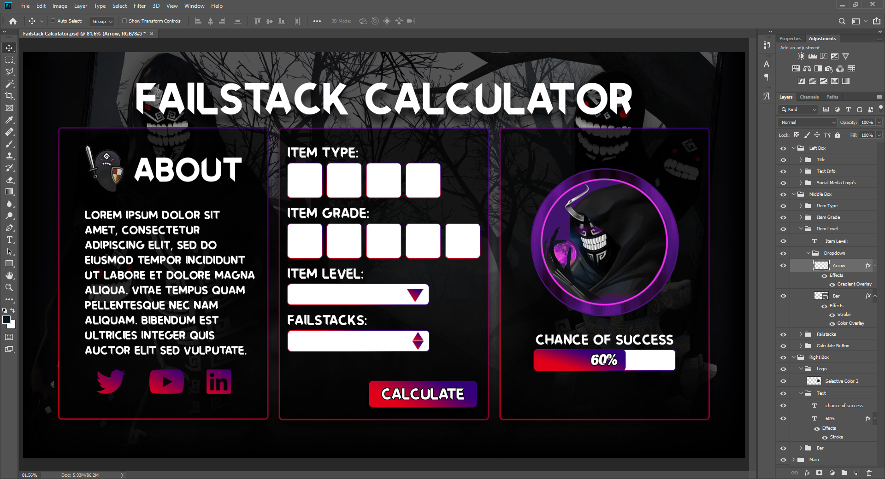
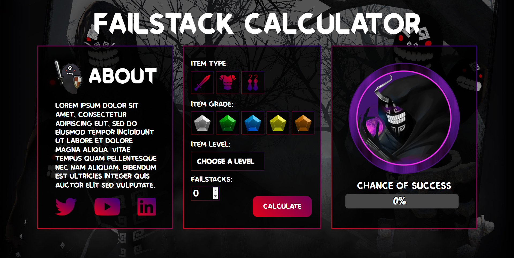

EZ-Dice
My first project of development was a chrome extension called EZ-Dice which is basically a dice roller.
The first thing i did before actually programming was watching some tutorials and do some research about how chrome extensions work and how to make one.
After understanding the roots of it i started making my own chrome extension.
I had a general idea about how i should make it and it also went quite easy. I have some experience in javascript and this programm didn't need that much since it basically only needed a random number generator that spits out a number that links to an image of a side of the dice and shows it to the user.

I designed each side of the dice myself in Photoshop and made a gif out of it that goes through each side twice, i made this so it looks like the dice is actually rolling/changing. This makes it also a little bit more fun to look at instead of just an image of dice that pops up.


Swiss Toolbox
My next project is called Swiss Toolbox, it's another chrome extension that is as it's name says a toolbox. Which basically means it has different types of tools once you open it.
I started off by thinking of what kind of tools i would like to have inside the toolbox and i instantly thought it would be kinda cool to make a chrome extension that is actually useful and i could use myself as well.
The first tool i thought of was a colourpicker which let's me easily pick colours that i like and puts the hex code of it into a textfield for me to copy.
The next item on my list was to try and implement my previous project (The EZ-Dice), i wanted to see if i would be able to add an already existing programm/chrome extension into my toolbox and it did work quite nicely.
For the next tool i asked some of my group members and my teacher and got the suggestion to add a tool that let's the user click on any image on any website and then make it fullscreen. This was quite a challenge and i didn't get it working myself but i did get it working with the help of someone else's code. I didn't want to just copy/paste the code without knowing what it means so i went through it several times to see in what order it works and understand how it works now.
From making this chrome extension i have learned that i can make every chrome extension i want and even add multiple chrome extensions into one, what makes it quite interesting for me and will make me definitely go back to this sometime to just experiment further.
Failstack Chance
 
Failstack Chance is my latest project and the one i am most excited about because so far i had a lot of fun designing and coding it.
This programm is a tool that shows the calculation of a specified action inside a game that i play (Black Desert Online). So far i have completed the design which you can see in the first image. I have also already made the design in HTML and CSS which you can see at the second image.
The parts where i am currently still working on and optimising is the calculation which will become a long algorithm in javascript using all the variables the user can enter, so what the item type is, the grade of the item, what level the item is and how many failstacks are going to be used.
After the calculation is done this value will be presented in the form of a percentage in the 3rd box.
Soundboard

The inspiration for this project was a challenge that was based around making a drum kit which basically meant, designing a drum kit and creating it in HTML, CSS through images or SVGs and then adding the corresponding sound to each image/SVG that you would hear when clicking on it or by keybindings.
Even though this was interesting and i wanted to make it i wanted to make something different so i thought of something else that would play sounds when pressing on it and the first thing that came to mind was a soundboard.
I instantly started off designing it through HTML, CSS since i knew i could make everything i wanted by using flex boxes.
After the design was done i added functionality to it rather easily and even though there is quite a bit of (unevitable) duplicate code in the javascript, i have tried to optimize it by using loops and arrays wherever i thought was possible.